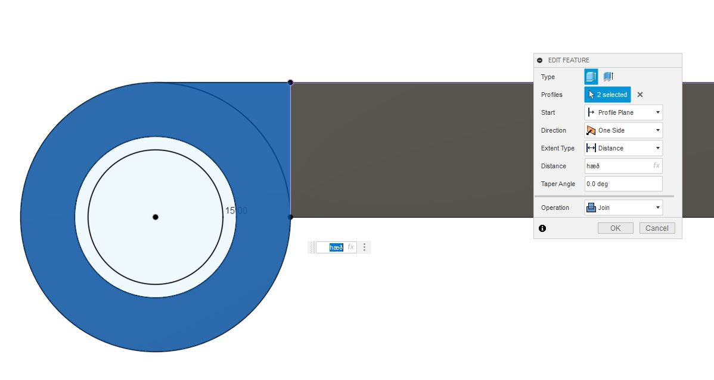
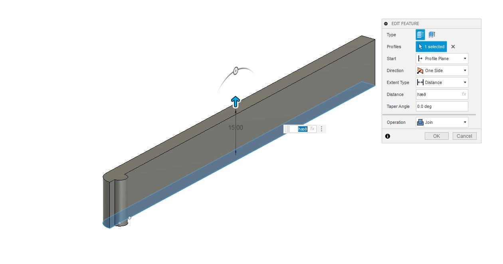
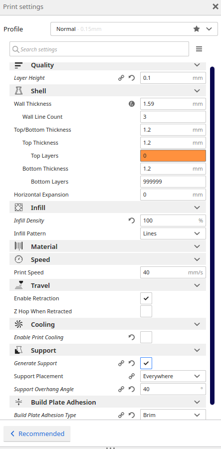

The design of the model.
1. Defining parameters
I started by making all the parameters I needed.
The parameters are as defined:
2. Drawing the first hinge
I started the actual design by drawing a sketch of the bottom and defining width and length by my parameters.
The sketch:
3. Extruding the first hinge
The sketch made previously was then extruded and the length of the extrusion defined by the "þykkt" parameter.
4. Making the closer
I drew a sketch of the "closer" that catches the other hinge and lockes it in.
I then extruded the closer.
After extruding the closer, I cut out a part of it to allow bending.
5. Making the rotating enclosure
I made a sketch to add a cylinder that encloses another cylinder that will be attatched to the other hinge.
I then extruded the outer cylinder and combined it with the existing handle.
After that I extruded the inner cylinder as a seperate body.
6. cutting out of the cylinder
To cut the inner part of the outer cylinder out I first created a sketch with the dimensions of the hole I wanted to cut out.
I then used the revolve tool in Fusion 360 to cut out the parts of the outer cylinder that I did not want.
7. Making the triangle groove
To make the triangular groove I started by drawing a sketch of a simple triangle.
I then extruded the sketch in one direction using the "lengd" parameter.
And then in the other direction.
8. Making the second hinge
To make the second hinge I made a sketch that matched with the first hinge.

I then extruded the sketch and joined it to the inner cylinder.
9. Using combine to make the fingers match with the bottom plate
Using the combine feature and the "keep tools" option I made the fingers in the side panels automatically match with the fingers on the bottom plate.

10. Fixing the rotation
The parts are now interfereing with each other at the cylinder intersection so I drew a sketch to define the faces I wanted to cut.
I then extruded the part of the second hinge that was interfering.
There were still two more parts that needed to be cut in order for the rotating cylinder enclosure to work so I cut them.
There was still a small part left behind so I cut that out.
11. Drawing the second triangle groove
To draw the second triangle groove I made a similar sketch to the first groove.
I then extruded the sketch.
12. Rotating the model
To make sure the slicing software does not accidentally combine the two hinges I rotated the second hinge.
13. Exporting the stl file
In order to make the file ready for the Cure slicing software I exported the model as a stl file.
13. Preparing the file for 3d printing
Before I adjusted the parameters in the slicing software Cure I printed a test file, the test is explained here.
14. Adjusting the 3D printing parameters
The printer used is the Ultimaker 2 Extended+, and the material used is ABS silver 2.85mm from Innofil3D.
The parameters are:
The material:
The 3D printer:
15. 3D printing
The gcode was exported to an sd card and put into the printer. The temperature of the Nozzle was 250°C and the build plate temperature was 110°C
16. The completed model
The clip turned out very nice and after removing the support it looks good.
The model in its entirety can be found in Github link to model.